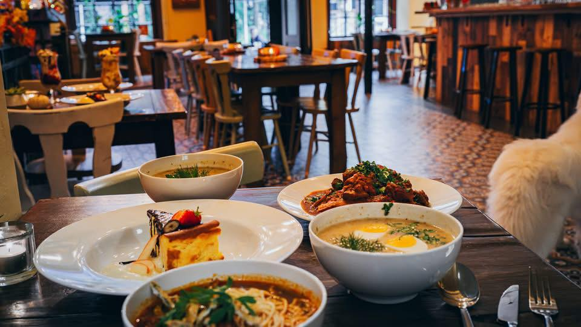
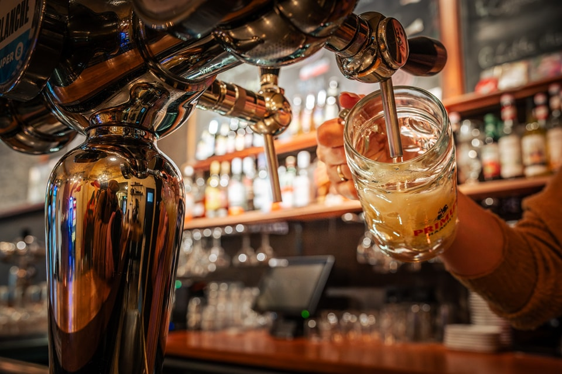
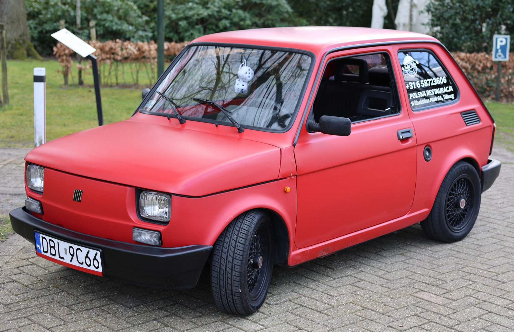

HollaPolla
Poolse en Hollandse keuken aan het Wilhelminapark
Het buurtcafé waar je komt voor pierogi, schnitzel of gewoon een koud biertje op het terras. Toegankelijk, dagvers en altijd met liefde bereid.
Een plek voor de buurtWitamy w Holla Polla
We koken hier met liefde. Vooral de soepen zijn iets waar we echt trots op zijn, die worden elke dag vers gemaakt.
Maar of je nou komt voor pierogi, een salade of een biertje op het terras, je bent altijd welkom. Voel je vrij om te vragen wat iets is of om gewoon iets nieuws te proberen. Dit is geen ingewikkeld restaurant, dit is een plek voor de buurt. Voor iedereen.
Groetjes Marcin Hollon
- Huisgemaakt en dagvers
- Soep van de week
- De grootste schnitzel van Tilburg
- Terras


Iets te vieren?Coś do świętowania lub firmowa impreza?
Vier je verjaardag, babyshower of buurtborrel gewoon bij ons. Of organiseer een presentatie, teamlunch of vrijdagmiddagborrel voor je bedrijf.
Feesten en borrels
Een gezellige borrel, een diner met familie of een compleet feest met band of dj. Wij zorgen voor de sfeer, de drankjes en onze Poolse en Hollandse hapjes. Makkelijk, betaalbaar en gewoon hartstikke leuk.
Voor bedrijven
Presentatie, teamlunch, bedrijfsborrel of compleet personeelsuitje, voor bedrijven in Tilburg en omgeving. Liever op je eigen kantoor? Wij verzorgen ook bedrijfscatering op maat: van Poolse bites tot uitgebreide buffetten.
Alles wordt met liefde en smaak geregeld.
OpeningstijdenGodziny otwarcia
| Dag | Open | Keuken |
|---|---|---|
| Maandag | gesloten | |
| Dinsdag | gesloten | |
| Woensdag | 15:30 - 21:00 | tot 21:00 |
| Donderdag | 15:30 - 21:00 | tot 21:00 |
| Vrijdag | 15:30 - 22:00 | tot 21:00 |
| Zaterdag | 13:00 - 00:00 | tot 22:00 |
| Zondag | 13:00 - 20:00 | tot 20:00 |
Reserveren
Zarezerwuj stolik
Reserveer online in een paar klikken, of bel of app ons even. Voor een groep of feest kun je ons ook mailen.
Parkeren kan betaald voor de deur.
Kom langsKontakt
5041 ED Tilburg
- Telefoon+31 6 58723606
- E-mailhollapolla66@gmail.com
- Parkerenbetaald, voor de deur
